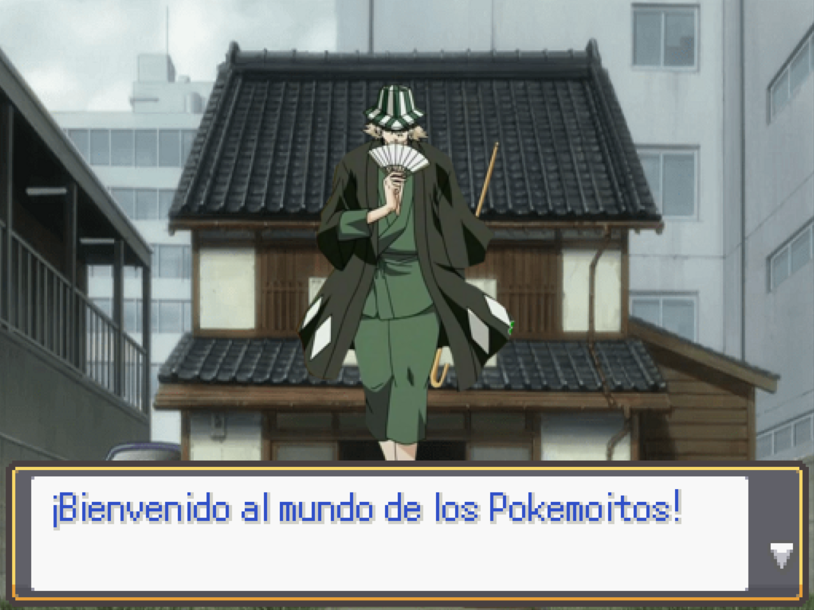
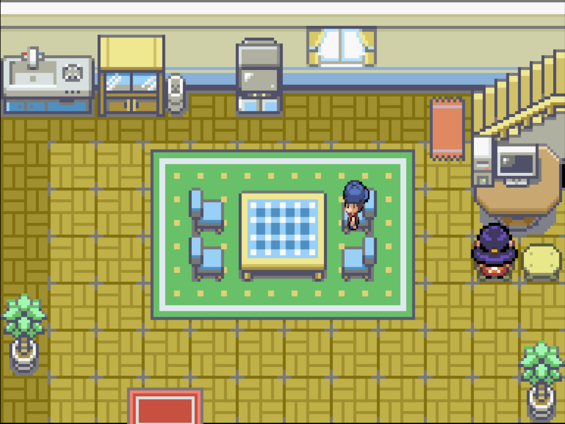
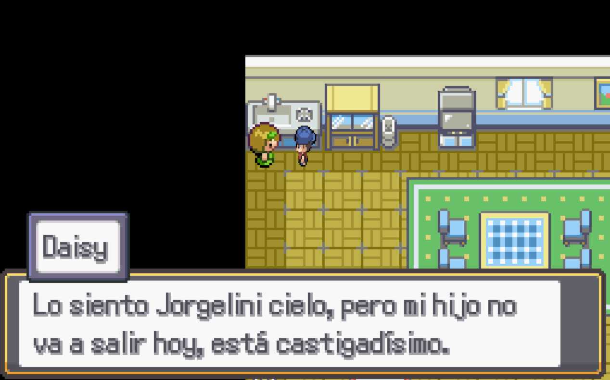
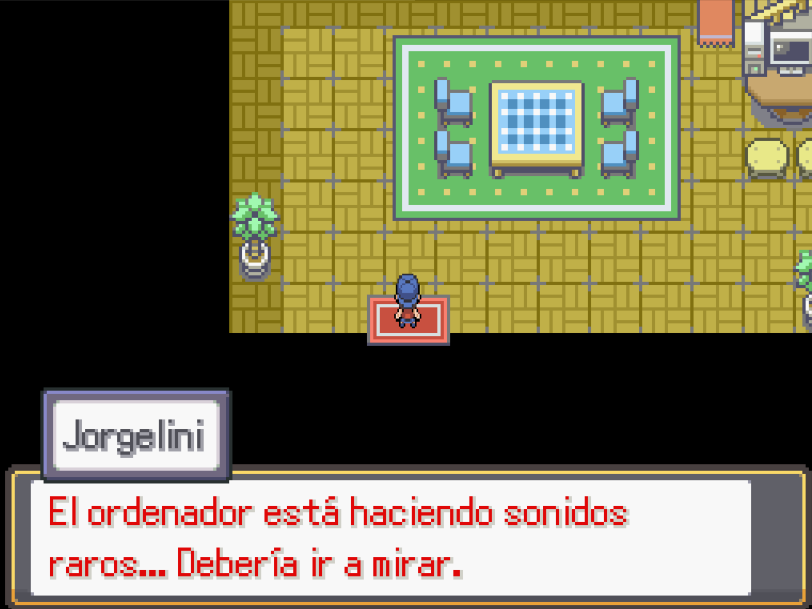

Introducción
La aventura empezará con una pequeña explicación por parte de Urahara, al terminar, verás que la historia empieza con un Jorgelini de niño.

Deberás hablar con tu madre y te echará una buena bronca porque el ordenador funcionará muy mal, y te culpará por usarlo para jugar. Te dirá que vayas a jugar fuera, con el vecino. Así que dirígete hacia su casa que se encuentra al lado de la tuya.

La madre del vecino te dirá que su hijo está castigado y no puede salir a jugar, así que volverás a casa y hablarás con tu madre de nuevo. Ella te dirá entonces que vayas a ver al Profesor, que se encuentra en el laboratorio del pueblo, justo al sur de la casa del vecino.

Podrás hablar con diferentes científicos dentro del Laboratorio, pero el más importante es el Profesor Oak. Este te contará detalles sobre tu hermano, que es un famoso entrenador que desafiará al Líder de la liga ese mismo día, retransmitido en la televisión.
También te propone que vayas a verle cuando cumplas 15 años y te regalará un Pokemoito en ese entonces, para que puedas comenzar tu aventura de Entrenador.
Te recordará que el combate se verá en televisión y te mandará a casa para que no te lo pierdas, así que irás de nuevo a tu casa para poder ver el famoso combate.
Al llegar a casa notarás un sonido extraño proveniente del ordenador y al comprobarlo, escucharás una voz misteriosa hablándote a través del pc, aunque apenas puedes distinguir las palabras por culpa de las interferencias.
Tras unos minutos de interferencias y sonidos extraños, el ordenador expulsará un pendrive y se reiniciará, volviendo a la normalidad.
El pendrive se lo llevarás al Profesor, pero primero tienes que ver el combate, así que sube a tu habitación por las escaleras y ponte la TV.